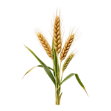

होम / गेहूं

गेहूं का भाव आज | Wheat Mandi Price Today
गेहूं के आज के उपलब्ध मंडी भाव देखें—श्रीगंगानगर, कोटा, जयपुर (बस्सी) और इंदौर के मॉडल, न्यूनतम और अधिकतम रेट।
नीचे मंडी-वार सूची में गेहूं के उपलब्ध भाव दिए हैं। मंडी के नाम पर क्लिक करके उस मंडी की दूसरी फसलों के भाव भी देख सकते हैं।
गेहूं का भाव आज: मंडी रेट, MSP और भाव घटने-बढ़ने के कारण
राम-राम किसान भाइयों! गेहूं रबी की सबसे बड़ी फसल है और हर किसान के मन में एक ही सवाल रहता है कि आज मंडी में गेहूं का भाव क्या चल रहा है। माल अभी बेचें या कुछ दिन रोकें, अपनी मंडी में बेचें या दूसरी मंडी में ले जाएँ, इन सब फ़ैसलों की जड़ में गेहूं का भाव ही होता है।
इसी ज़रूरत को ध्यान में रखकर FasalBhav.in पर हम गेहूं का मंडी भाव रोज़ अपडेट करते हैं, ताकि आप सही जानकारी के साथ सौदा कर सकें।
गेहूं का भाव क्यों घटता-बढ़ता है?
कई किसान पूछते हैं कि एक ही हफ़्ते में भाव ऊपर-नीचे क्यों हो जाता है। इसके पीछे ये मुख्य कारण होते हैं:
- मंडी में आवक: कटाई के मौसम में माल एक साथ बहुत आता है, इसलिए भाव पर दबाव रहता है। आवक घटने पर भाव को सहारा मिलता है।
- सरकारी खरीद और MSP: सरकार हर साल गेहूं का न्यूनतम समर्थन मूल्य घोषित करती है और तय केंद्रों पर खरीद करती है। खुले बाज़ार का भाव अक्सर इसी के आसपास घूमता है।
- उत्पादन का अनुमान: बारिश, पाला, गर्मी की लहर या बुवाई का रकबा घटने-बढ़ने से पैदावार का अनुमान बदलता है, और उसके साथ बाज़ार का मूड भी।
- आटा मिलों की माँग: मिलों की खरीद बढ़ने पर अच्छी क्वालिटी के गेहूं के रेट ऊपर जाते हैं।
- सरकारी नीतियाँ: स्टॉक सीमा, निर्यात-आयात के नियम और सरकारी गोदामों से खुले बाज़ार में बिक्री जैसे फ़ैसले भाव पर सीधा असर डालते हैं।
- त्योहार और शादी का सीज़न: इस समय आटे की खपत बढ़ती है, जिससे माँग में तेज़ी आ सकती है।
- ढुलाई और मौसम: बारिश या रास्ते की दिक़्क़त से माल की आवाजाही रुके तो स्थानीय मंडी के भाव में अंतर आ जाता है।
गेहूं की किस्म और क्वालिटी से भाव में फ़र्क
सभी गेहूं एक भाव पर नहीं बिकते। मंडी में माल की पहचान आमतौर पर इन नामों से होती है:
- शरबती: चमकदार, मोटा और भारी दाना। मध्य प्रदेश के इलाकों का यह गेहूं अक्सर बाकी किस्मों से ऊँचे भाव पर बिकता है।
- लोकवन: मध्यम आकार का सुनहरा दाना, जिसकी रोटी और आटे में अच्छी माँग रहती है।
- मिल क्वालिटी: आटा मिलों के लिए बिकने वाला सामान्य माल।
- सामान्य या कमज़ोर क्वालिटी: जिसमें नमी, टूटा-सिकुड़ा दाना, मिट्टी या कंकड़ ज़्यादा हो, उसका भाव कम मिलता है।
भाव पर सबसे ज़्यादा असर दाने के आकार, चमक और वज़न का पड़ता है। इसके बाद नमी की मात्रा, टूटे या कीड़े लगे दानों का प्रतिशत और मिट्टी-कचरे की मिलावट देखी जाती है।
प्रो टिप: गेहूं को अच्छी तरह साफ़ करके और सुखाकर मंडी ले जाएँ। थोड़ी सी सफ़ाई और सुखाई की मेहनत से भाव में सीधा फ़र्क पड़ सकता है।
गेहूं का MSP क्या होता है और मंडी भाव से कैसे जुड़ा है?
MSP यानी न्यूनतम समर्थन मूल्य वह भाव है जिस पर सरकार तय शर्तों के साथ किसान से गेहूं खरीदती है। इसकी घोषणा आमतौर पर रबी की बुवाई से पहले होती है। MSP किसान के लिए सुरक्षा कवच का काम करता है, क्योंकि बाज़ार में भाव बहुत गिर जाए तब भी एक आधार भाव का सहारा रहता है।
खुले बाज़ार में गेहूं का भाव MSP से ऊपर भी जा सकता है और नीचे भी। जब मंडी भाव MSP से ऊपर चलता है तो निजी व्यापारी और मिलें ज़्यादा खरीदारी करती हैं। जब भाव MSP के आसपास या नीचे आता है तो किसान सरकारी खरीद केंद्रों की तरफ़ रुख करते हैं।
सरकारी केंद्र पर बेचने के लिए आमतौर पर पहले पंजीकरण कराना पड़ता है। पंजीकरण की तारीख, ज़रूरी कागज़ात और खरीद केंद्र की जानकारी अपने ज़िले के कृषि या खाद्य विभाग से लें। नियम हर राज्य और हर साल थोड़े बदल सकते हैं।
राजस्थान और देश की प्रमुख गेहूं मंडियाँ
गेहूं की सबसे ज़्यादा आवक उत्तर और मध्य भारत की मंडियों में होती है। मध्य प्रदेश की इंदौर, उज्जैन और सीहोर मंडियाँ, उत्तर प्रदेश की कानपुर और हापुड़ मंडियाँ, पंजाब-हरियाणा की मंडियाँ तथा राजस्थान की कोटा, श्रीगंगानगर, जयपुर, भरतपुर और जोधपुर मंडियाँ प्रमुख हैं।
हर मंडी का भाव उस इलाके की पैदावार, आवक और स्थानीय माँग पर निर्भर करता है। इसीलिए एक ही दिन कोटा और जोधपुर, या इंदौर और जयपुर के भाव में फ़र्क दिख सकता है। अपनी नज़दीकी मंडी के साथ आसपास की दूसरी मंडियों के भाव भी देखें, क्योंकि कभी-कभी थोड़ी दूर की मंडी में बेहतर रेट मिल जाता है। लेकिन फ़ैसला करने से पहले ढुलाई का खर्च ज़रूर जोड़ लें।
साल भर गेहूं के भाव का आम रुझान
- कटाई और आवक का समय (मार्च से मई के आसपास): मंडियों में माल की भरमार रहती है, इसलिए भाव अक्सर दबा रहता है। सरकारी खरीद भी इसी समय चलती है।
- आवक घटने के बाद (गर्मी और बरसात): बाज़ार में माल कम आता है और भाव को सहारा मिलने की गुंजाइश रहती है।
- त्योहार और बुवाई का समय: खपत और बीज की माँग के कारण बाज़ार में हलचल रहती है।
यह सिर्फ़ आम रुझान है। हर साल का भाव उस साल की पैदावार, सरकारी नीति और माँग पर निर्भर करता है, इसलिए किसी साल इसका उल्टा भी हो सकता है।
गेहूं बेचने से पहले इन बातों का ध्यान रखें
- सिर्फ़ एक दिन के भाव पर फ़ैसला न लें। 2-3 दिन या हफ़्ते भर का रुझान देखें।
- अपनी मंडी के साथ आसपास की 2-3 मंडियों के भाव की तुलना करें।
- ढुलाई, हम्माली, तुलाई और मंडी शुल्क घटाकर असली बचत निकालें।
- माल की क्वालिटी के हिसाब से ही भाव की उम्मीद रखें।
- अगर सुरक्षित भंडारण है और पैसों की तुरंत ज़रूरत नहीं है, तो कुछ समय रोककर बेचने पर विचार कर सकते हैं। पर रोकने में भाव गिरने का जोखिम और भंडारण का खर्च भी है।
- तौल की पर्ची और भुगतान की रसीद हमेशा संभालकर रखें।
- उधार या बाद के भुगतान पर सौदा करने से पहले खरीदार और आढ़ती के बारे में अच्छी तरह जाँच-पड़ताल कर लें।
गेहूं का भंडारण और भाव का संबंध
माल रोककर बेचना हो तो भंडारण में लापरवाही सबसे बड़ा नुकसान करती है। नमी, घुन और चूहों से खराब हुआ गेहूं बाद में कम भाव पर बिकता है, और रोकने का पूरा फ़ायदा चला जाता है।
- भंडारण से पहले दानों को अच्छी तरह धूप में सुखाएँ।
- बोरों को ज़मीन से ऊपर लकड़ी के पट्टों पर, सूखी और हवादार जगह में रखें।
- कोठी, टंकी या बोरों की पहले सफ़ाई करें और पुराने अनाज के अवशेष हटा दें।
- बीच-बीच में माल का निरीक्षण करते रहें।
- कीट नियंत्रण की दवा इस्तेमाल करनी हो तो पहले कृषि विशेषज्ञ या KVK से सलाह लें और लेबल पर लिखी सावधानियों का पालन करें।
निष्कर्ष
गेहूं बेचना सिर्फ़ आज का भाव देखने का काम नहीं है। माल की क्वालिटी, भंडारण, आसपास की मंडियों का रेट और अपनी ज़रूरत, इन सबको मिलाकर फ़ैसला लेने से ही अच्छा दाम मिलता है। रोज़ गेहूं और दूसरी फसलों का ताज़ा मंडी भाव जानने के लिए FasalBhav.in पर आते रहें।
खेती की उपयोगी जानकारी और मंडी भाव सीधे अपने फोन पर पाने के लिए हमारा मुफ्त WhatsApp ग्रुप ज़रूर जॉइन करें।
सूचना: इस पेज पर दिए गए भाव केवल जानकारी के लिए हैं। खरीद-बिक्री का फ़ैसला करने से पहले अपनी मंडी में भाव की पुष्टि ज़रूर करें।
अक्सर पूछे जाने वाले सवाल
1 कुंटल गेहूं का आज का रेट क्या है?
सभी मंडियों में फसलों के मंडी भाव 1 कुंटल के भाव के रूप में ही दिखाए जाते है। ऊपर सारणी में आज के गेहूं के मंडी भाव है देख लें।
यूपी में गेहूं का आज का ताजा रेट क्या है?
उत्तर प्रदेश की विभिन्न कृषि उपज मंडियों में गेहूं के आज के ताज़ा बाजार भाव ऊपर सारणी में दर्ज किया गया है।
आज गेहूं का क्या भाव है?
देश की विभिन्न कृषि उपज मंडियों में आज गेहूं के ताज़ा बाजार भाव और आवक की विस्तृत जानकारी इस पेज के सबसे ऊपरी हिस्से में दी गई तालिका में उपलब्ध करा दी गई है।
1 कुंटल गेहूं कितने रुपए का है?
1 क्विंटल गेहूं की कीमत अलग-अलग कृषि मंडियों में उसकी क्वालिटी (जैसे शरबती, लोकवन, टुकड़ी या मिल क्वालिटी), दाने के आकार, चमक, नमी और दैनिक आवक के आधार पर तय होती है। विभिन्न राज्यों और स्थानीय कृषि उपज मंडियों में गेहूं के ताज़ा न्यूनतम, अधिकतम और मॉडल भाव की पूरी जानकारी इस पेज के सबसे ऊपर दी गई तालिका में उपलब्ध करा दी गई है। अपनी नजदीकी मंडी के ताज़ा रेट और बाजार का रुख जानने के लिए कृपया पेज को ऊपर की तरफ स्क्रॉल करें और अपडेटेड लिस्ट देखें।
2026 में गेहूं का रेट क्या है?
देश की विभिन्न कृषि उपज मंडियों में 2026 के ताज़ा गेहूं भाव और दैनिक आवक की पूरी जानकारी इस पेज के सबसे ऊपरी हिस्से में दी गई तालिका (टेबल) में उपलब्ध करा दी गई है। मंडियों में गेहूं के रेट मुख्य रूप से उसकी किस्म (जैसे शरबती, लोकवन, मिल क्वालिटी या दड़ा), दाने की चमक, नमी और बाजार की मांग के आधार पर प्रतिदिन निर्धारित होते हैं। सभी प्रमुख राज्यों और स्थानीय मंडियों के आज के सटीक न्यूनतम, अधिकतम तथा मॉडल भाव जानने के लिए कृपया पेज को ऊपर की तरफ स्क्रॉल करें और आज की अपडेटेड लिस्ट देखें।
1482 गेहूं का भाव
1482 गेहूं का भाव मंडी और उपलब्ध किस्म-रिकॉर्ड के अनुसार अलग हो सकता है। मंडीवार और किस्म-वार उपलब्ध रिकॉर्ड ऊपर दी गई तालिका में देखें।
देसी गेहूं का भाव
देसी गेहूं का एक ही मंडी भाव नहीं होता। मंडीवार और किस्म-वार उपलब्ध रिकॉर्ड ऊपर दी गई तालिका में देखें।